| Curso / turma | Ciência da Computação · 1º ano · 1CC-FEV |
| Integrantes | Ryan Luther Roque — RM 572993 João Guilherme Figueiredo — RM 572697 |
| Simulador | Logic.ly (logic.ly/demo) |
| Data | 12 de novembro de 2026 |
Muitas famílias de baixa renda não sabem se podem receber a Tarifa Social de Energia Elétrica nem a quem recorrer. O módulo de decisão lógica do Citizen Assist AI faz quatro perguntas de sim/não e devolve uma orientação clara: há indício de direito naquela conta de luz; a família atende a uma condição, mas é preciso conferir com a distribuidora a situação da unidade (se é residencial e se é a única da família com o benefício); ou as condições modeladas não foram atendidas e a pessoa deve procurar o CRAS.
A situação de atendimento é a orientação sobre um benefício: a resposta indica o próximo passo do cidadão, sem decidir por ele.
As regras foram retiradas do texto atualizado da Lei nº 12.212/2010, já com as mudanças da Lei nº 15.235/2025:
| Dispositivo | O que diz (resumo) | Uso no modelo |
|---|---|---|
| Art. 2º, caput | A Tarifa Social vale para unidades da Subclasse Residencial Baixa Renda que atendam a pelo menos uma das condições dos incisos. | operador OU |
| Art. 2º, I | Família inscrita no CadÚnico com renda familiar mensal per capita menor ou igual a meio salário mínimo. | A · B |
| Art. 2º, II | Ter entre os moradores quem receba o Benefício de Prestação Continuada (BPC). | C |
| Art. 2º, § 2º | A tarifa é aplicada a uma única unidade consumidora por família de baixa renda. | D |
| Art. 1º, I e II | Desconto de 100% no consumo de até 80 kWh/mês; acima disso, sem desconto (redação da Lei nº 15.235/2025). | texto da saída T |
Fontes consultadas em 12 nov. 2026; a lista completa com endereços está nas Referências.
| Variável | Pergunta ao cidadão | 1 significa | 0 significa |
|---|---|---|---|
| A | A família está inscrita no CadÚnico? | inscrita | não inscrita |
| B | A renda mensal por pessoa é de até meio salário mínimo? | até ½ salário mínimo | acima de ½ salário mínimo |
| C | Alguém que mora na casa recebe o BPC? | recebe | ninguém recebe |
| D | A conta é de uma casa (unidade residencial) e é a única da família com o benefício? | as duas coisas valem | pelo menos uma não vale: unidade não residencial, ou outra unidade da família já tem o benefício |
Sobre a variável D. Ela combina duas condições (unidade residencial e unicidade do benefício na família) para manter o modelo em quatro variáveis. Por isso, quando D = 0, o circuito não sabe qual das duas falhou, e a saída U não pode afirmar que "o benefício deve ficar em outra unidade": ela apenas encaminha o cidadão à distribuidora. Os rótulos das lâmpadas nos prints são resumidos; vale o texto desta tabela.
Para simplificar a escrita, usamos o sinal intermediário R = A·B + C ("atende ao art. 2º"). As saídas são exclusivas: em cada combinação, exatamente uma vale 1.
| Saída | Quando vale 1 | Orientação mostrada |
|---|---|---|
| T | R = 1 e D = 1 | Há indício de direito à Tarifa Social nesta unidade (100% de desconto até 80 kWh/mês). Confirmar com a distribuidora. |
| U | R = 1 e D = 0 | A família atende a uma condição, mas D = 0. Como D junta duas perguntas, o motivo pode ser unidade não residencial ou benefício já aplicado em outra unidade da família. Orientação: confirmar com a distribuidora a classificação da unidade e em qual conta o benefício pode ser aplicado. Não garante nem nega o benefício. |
| K | R = 0 | Nenhuma das condições do art. 2º foi atendida: procurar o CRAS para inscrição/atualização no CadÚnico e verificar outras situações. Não é negativa oficial. |
Ordem das linhas: A é o bit mais significativo (índice do mintermo m = 8A + 4B + 2C + D).
| m | A | B | C | D | R | T | U | K | Orientação |
|---|---|---|---|---|---|---|---|---|---|
| m0 | 0 | 0 | 0 | 0 | 0 | 0 | 0 | 1 | Condições modeladas não atendidas: procurar o CRAS |
| m1 | 0 | 0 | 0 | 1 | 0 | 0 | 0 | 1 | Condições modeladas não atendidas: procurar o CRAS |
| m2 | 0 | 0 | 1 | 0 | 1 | 0 | 1 | 0 | Atende a uma condição; conferir a unidade com a distribuidora |
| m3 | 0 | 0 | 1 | 1 | 1 | 1 | 0 | 0 | Indício de direito nesta unidade |
| m4 | 0 | 1 | 0 | 0 | 0 | 0 | 0 | 1 | Condições modeladas não atendidas: procurar o CRAS |
| m5 | 0 | 1 | 0 | 1 | 0 | 0 | 0 | 1 | Condições modeladas não atendidas: procurar o CRAS |
| m6 | 0 | 1 | 1 | 0 | 1 | 0 | 1 | 0 | Atende a uma condição; conferir a unidade com a distribuidora |
| m7 | 0 | 1 | 1 | 1 | 1 | 1 | 0 | 0 | Indício de direito nesta unidade |
| m8 | 1 | 0 | 0 | 0 | 0 | 0 | 0 | 1 | Condições modeladas não atendidas: procurar o CRAS |
| m9 | 1 | 0 | 0 | 1 | 0 | 0 | 0 | 1 | Condições modeladas não atendidas: procurar o CRAS |
| m10 | 1 | 0 | 1 | 0 | 1 | 0 | 1 | 0 | Atende a uma condição; conferir a unidade com a distribuidora |
| m11 | 1 | 0 | 1 | 1 | 1 | 1 | 0 | 0 | Indício de direito nesta unidade |
| m12 | 1 | 1 | 0 | 0 | 1 | 0 | 1 | 0 | Atende a uma condição; conferir a unidade com a distribuidora |
| m13 | 1 | 1 | 0 | 1 | 1 | 1 | 0 | 0 | Indício de direito nesta unidade |
| m14 | 1 | 1 | 1 | 0 | 1 | 0 | 1 | 0 | Atende a uma condição; conferir a unidade com a distribuidora |
| m15 | 1 | 1 | 1 | 1 | 1 | 1 | 0 | 0 | Indício de direito nesta unidade |
Conferência: T tem 5 linhas em 1, U tem 5 e K tem 6. São 16 no total, sem sobreposição.
Notação: + é OU, justaposição ou · é E, e ′ é NÃO.
| # | Expressão | Propriedade usada |
|---|---|---|
| 1 | A′B′CD + A′BCD + AB′CD + ABC′D + ABCD | forma canônica |
| 2 | (A′B′CD + A′BCD) + (AB′CD + ABCD) + (ABC′D + ABCD) | idempotência (X = X + X: ABCD usado duas vezes), comutativa e associativa |
| 3 | A′CD(B′ + B) + ACD(B′ + B) + ABD(C′ + C) | distributiva (pôr em evidência) |
| 4 | A′CD·1 + ACD·1 + ABD·1 = A′CD + ACD + ABD | complemento (X + X′ = 1) e identidade (X·1 = X) |
| 5 | CD(A′ + A) + ABD = CD + ABD | distributiva, complemento e identidade |
| 6 | D(AB + C) | distributiva (fatoração de D): T = D·R |
Mesmos passos de T, trocando D por D′ (as cinco linhas de U são as de T com D = 0):
| # | Expressão | Propriedade usada |
|---|---|---|
| 1 | A′B′C′D′ + A′B′C′D + A′BC′D′ + A′BC′D + AB′C′D′ + AB′C′D | forma canônica |
| 2 | A′B′C′(D′ + D) + A′BC′(D′ + D) + AB′C′(D′ + D) | distributiva |
| 3 | A′B′C′ + A′BC′ + AB′C′ | complemento e identidade |
| 4 | (A′B′C′ + A′BC′) + (A′B′C′ + AB′C′) | idempotência (A′B′C′ repetido) |
| 5 | A′C′(B′ + B) + B′C′(A′ + A) = A′C′ + B′C′ | distributiva, complemento e identidade |
| 6 | C′(A′ + B′) | distributiva |
| 7 | C′·(AB)′ | 1º teorema de De Morgan: A′ + B′ = (A·B)′ |
| 8 | (AB + C)′ = R′ | 2º teorema de De Morgan: X′·Y′ = (X + Y)′, com X = AB e Y = C |
Por que De Morgan foi necessário aqui: a simplificação comum para em K = A′C′ + B′C′, que pede três portas NOT, duas AND e uma OR. Os dois teoremas de De Morgan mostram que K é exatamente a negação de R. Como R já é calculado para T e U, K passa a custar uma única porta NOT, e o circuito final cai de 15 para 6 portas (seção 8).
Verificações: T + U = R(D + D′) = R; e T + U + K = R + R′ = 1. Logo as três saídas cobrem todos os casos e nunca acendem juntas.
Linhas: AB; colunas: CD, ambas na ordem de Gray (00, 01, 11, 10). As bordas opostas são vizinhas, por isso alguns grupos aparecem divididos em duas partes.
| Saída | Álgebra | Karnaugh | Igual? |
|---|---|---|---|
| T | CD + ABD | CD + ABD | sim |
| U | CD′ + ABD′ | CD′ + ABD′ | sim |
| K | A′C′ + B′C′ | A′C′ + B′C′ | sim |
Os dois métodos chegam às mesmas somas de produtos mínimas. O mapa deixa os grupos visíveis; a álgebra mostra por que eles são válidos, inclusive o uso de m15 (em T) e m0/m1 (em K) em dois grupos, que é a idempotência.
Critério de contagem (igual para todos): cada porta AND/OR de n entradas conta como n − 1 portas de 2 entradas; cada variável negada usa uma porta NOT, compartilhada pelas saídas.
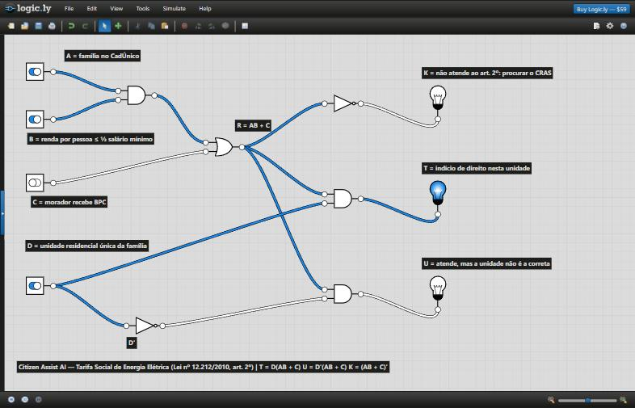
| Circuito | AND (2 ent.) | OR (2 ent.) | NOT | Total | Literais |
|---|---|---|---|---|---|
| Original: forma canônica (16 mintermos) | 48 | 13 | 4 | 65 | 64 |
| Simplificado: Karnaugh, sem compartilhar entre saídas | 8 | 3 | 4 | 15 | 14 |
| Final: fatorado com R compartilhado (De Morgan), no Logic.ly | 3 | 1 | 2 | 6 | 4 entradas |
Cálculo do original: T e U têm 5 mintermos cada (5 × 3 AND + 4 OR = 19 portas cada); K tem 6 (6 × 3 AND + 5 OR = 23); somando as 4 NOT, são 65 portas. O simplificado tem T = 4, U = 4 e K = 3, mais 4 NOT: 15 portas. A fatoração com R compartilhado reduz o circuito em 91% em relação ao original, sem mudar nenhuma linha da tabela-verdade (seção 10).
https://logic.ly/demo/ e fechar a janela de boas-vindas.Os rótulos (Label) no circuito explicam cada entrada e saída, para que quem testar entenda a orientação sem consultar a tabela.
No Logic.ly cada entrada é uma Toggle Switch, que só assume 0 (desligada) ou 1 (ligada). Valores fora de {0, 1}, campos vazios ou textos não podem ser informados, ou seja, a entrada inválida é impedida pela própria interface. Ainda assim, o circuito trata o estado lógico:
Os dados usados são apenas quatro respostas sim/não: nenhum nome, CPF, NIS ou endereço é informado ao circuito.
Cada uma das 16 combinações foi aplicada às chaves do Logic.ly. A lâmpada acesa foi comparada com a regra original (tabela-verdade, seção 4) e com a expressão simplificada (T = CD + ABD, U = CD′ + ABD′, K = A′C′ + B′C′) calculada linha a linha.
| m | ABCD | Regra original (tabela-verdade) | Expressão simplificada | Lâmpada acesa no Logic.ly | Equivalente |
|---|---|---|---|---|---|
| m0 | 0000 | K | K | K | ✔ |
| m1 | 0001 | K | K | K | ✔ |
| m2 | 0010 | U | U | U | ✔ |
| m3 | 0011 | T | T | T | ✔ |
| m4 | 0100 | K | K | K | ✔ |
| m5 | 0101 | K | K | K | ✔ |
| m6 | 0110 | U | U | U | ✔ |
| m7 | 0111 | T | T | T | ✔ |
| m8 | 1000 | K | K | K | ✔ |
| m9 | 1001 | K | K | K | ✔ |
| m10 | 1010 | U | U | U | ✔ |
| m11 | 1011 | T | T | T | ✔ |
| m12 | 1100 | U | U | U | ✔ |
| m13 | 1101 | T | T | T | ✔ |
| m14 | 1110 | U | U | U | ✔ |
| m15 | 1111 | T | T | T | ✔ |
Resultado: 16 de 16 combinações equivalentes nas três representações, com exatamente uma orientação por linha.
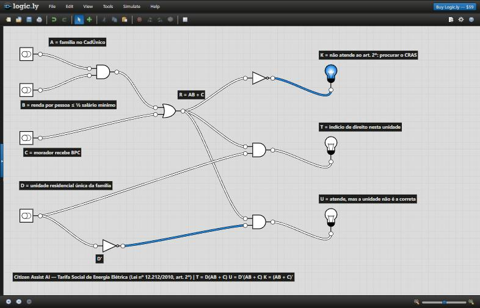
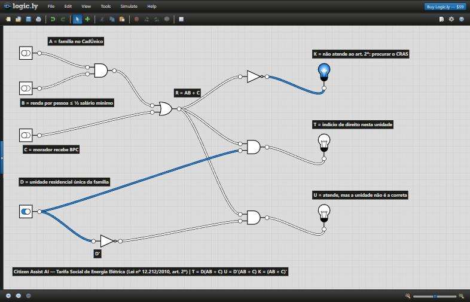
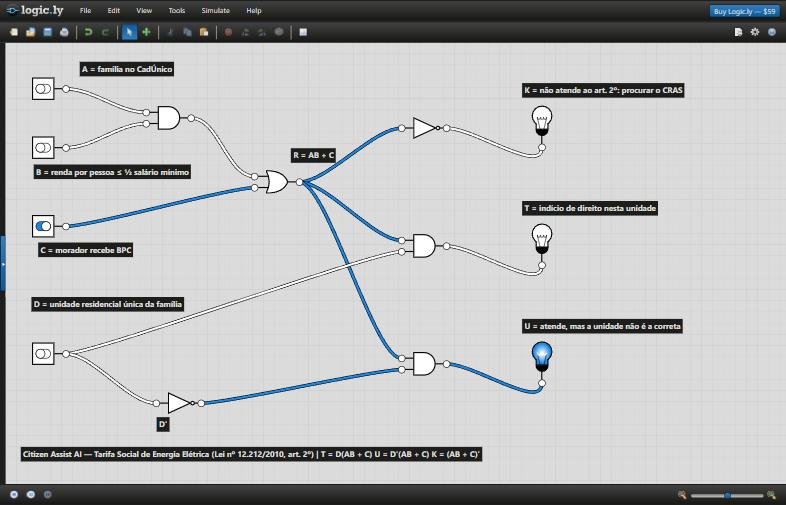
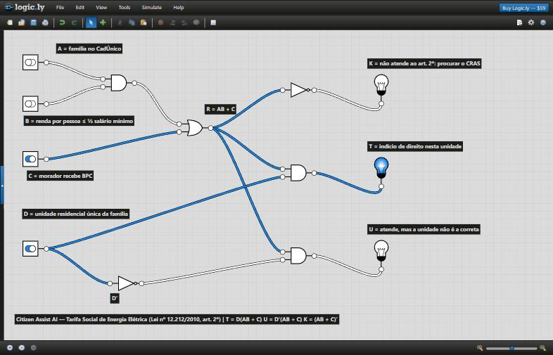
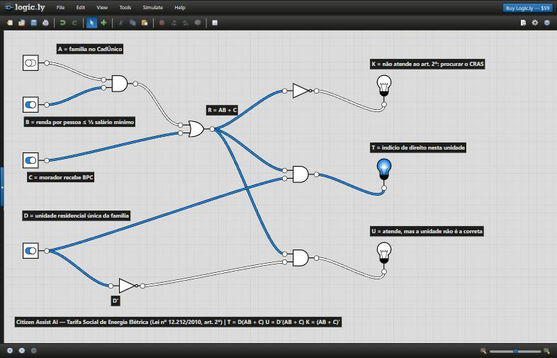
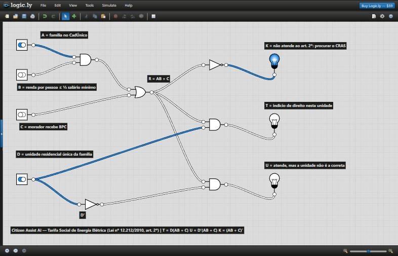
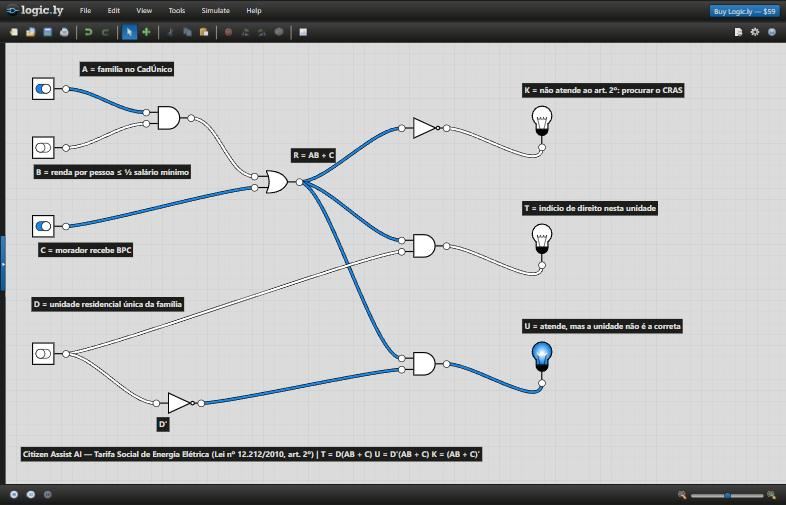
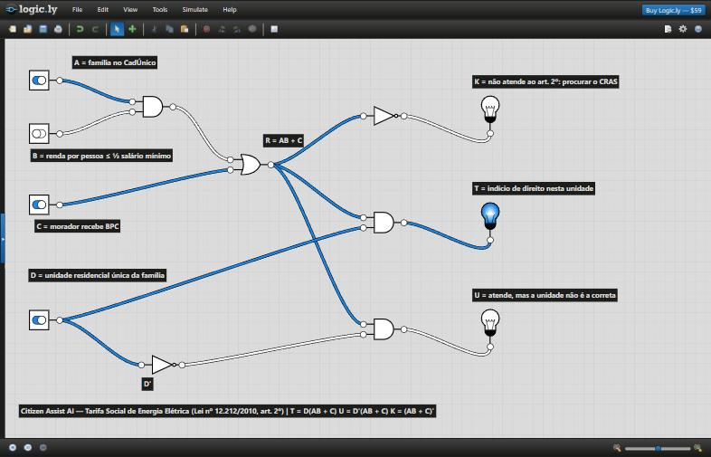
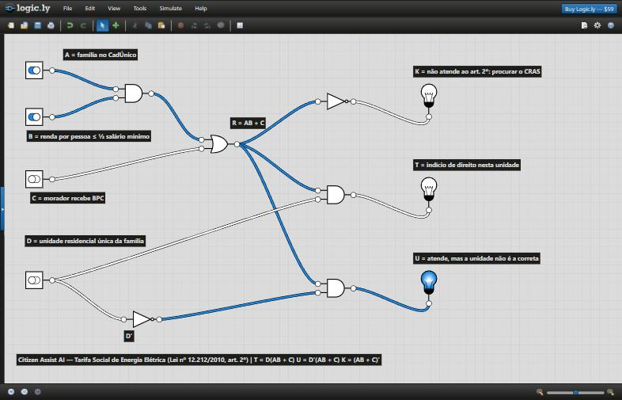
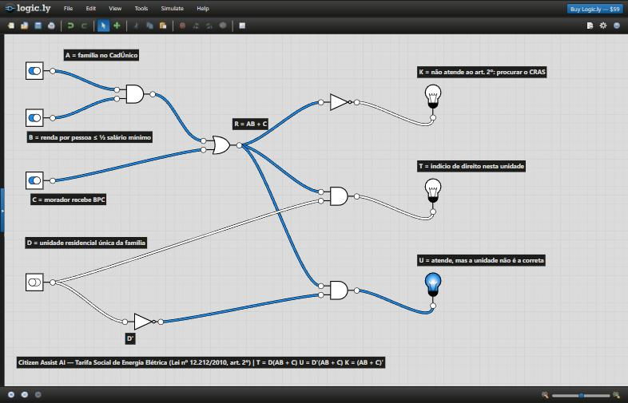
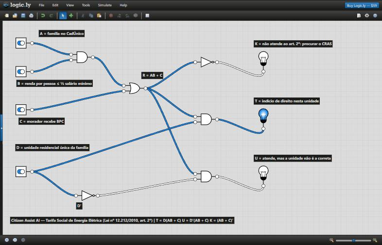
https://logic.ly/demo/ em um navegador (não precisa instalar nada) e fechar a janela de boas-vindas.